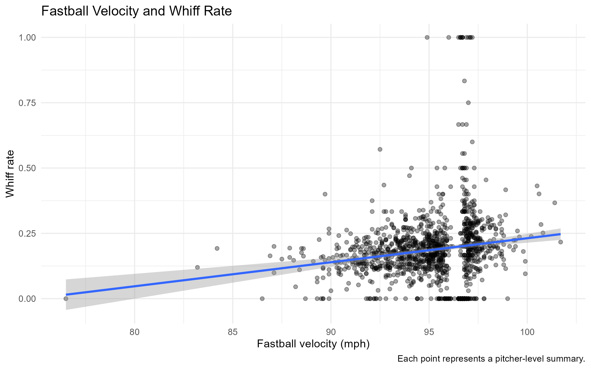
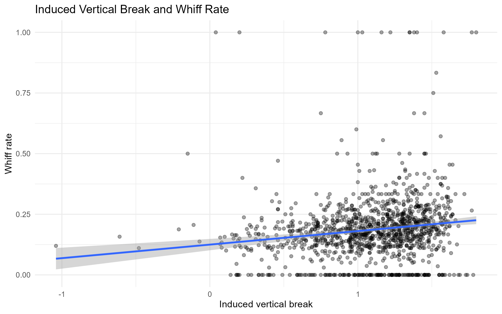
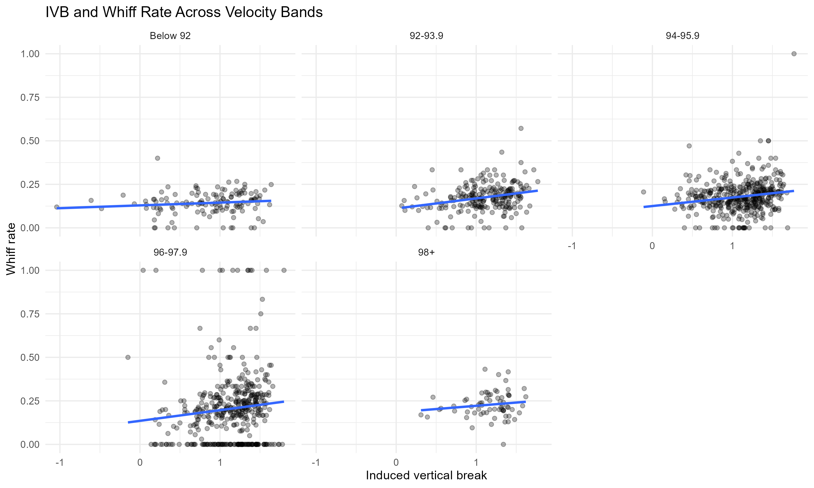

BASEBALL RESEARCH & DEVELOPMENT
Project Summary
Evaluating whether fastball movement metrics improve whiff prediction beyond velocity alone.
This project uses MLB fastball data to compare binomial regression models built around velocity, movement characteristics, and velocity-movement interactions. Model performance is evaluated using held-out data and pitcher-grouped cross-validation.
Key result: Adding movement metrics improved held-out RMSE, MAE, and log loss, although the predictive gains were modest. The results suggest movement provides additional information beyond velocity, while highlighting the need for further validation and attention to unexplained pitcher-level variation.
Study at a Glance
Usable Profiles
1,249
After excluding zero-swing profiles
Unique Pitchers
812
Included in the analysis
Total Swings
162,227
Across usable profiles
Swing-Weighted Whiff Rate
19.05%
30,905 whiffs / 162,227 swings
Statistical Findings
01 — Velocity Matters
Fastball velocity was positively associated with whiff odds. In the velocity-only model, each additional mile per hour was associated with approximately 7.2% higher whiff odds.
02 — Movement Adds Information
Induced vertical break and horizontal movement jointly improved model fit beyond velocity alone. IVB had a positive association with whiff odds, while horizontal movement was not statistically significant in the additive model.
03 — Predictive Gains Were Modest
On held-out data, adding movement reduced log loss from 0.48749 to 0.48631. The improvement was consistent with a small, rather than dramatic, increase in predictive performance.
Model Comparison
Three binomial regression models were compared to evaluate whether fastball movement metrics added information beyond velocity alone.
| Model | AIC | Residual Deviance | Residual DF | Deviance / DF |
|---|---|---|---|---|
| Velocity Only | 8041.084 | 3334.710 | 1247 | 2.674 |
| Velocity + Movement | 7809.648 | 3099.274 | 1245 | 2.489 |
| Velocity + Movement + Interactions | 7755.424 | 3041.050 | 1243 | 2.447 |
Lower AIC indicates better relative fit among these models. Residual deviance per degree of freedom above 2 suggests potential overdispersion, which limits interpretation of the binomial model.
Exploratory Data Analysis
These figures visualize relationships between fastball characteristics and observed whiff rates before interpreting the regression models.
Velocity vs. Whiff Rate

Examines how observed whiff rate varies with fastball velocity.
IVB vs. Whiff Rate

Examines the relationship between induced vertical break and observed whiff rate.
IVB by Velocity Band

Compares average induced vertical break across fastball velocity groups.
Held-Out Validation
Model performance was evaluated on 244 held-out pitcher profiles representing 31,965 swings. Lower RMSE, MAE, and log loss indicate better predictive performance.
| Metric | Velocity Only | Velocity + Movement |
|---|---|---|
| Profile Rows | 244 | 244 |
| Total Swings | 31,965 | 31,965 |
| RMSE | 0.11093 | 0.10994 |
| MAE | 0.07171 | 0.07112 |
| Log Loss | 0.48749 | 0.48631 |
Held-Out Model Performance
Relative reduction in prediction error when movement metrics are added to the velocity-only baseline. Lower error is better.
RMSE
Root mean squared error
0.89% lower error
MAE
Mean absolute error
0.82% lower error
Log Loss
Probabilistic prediction error
0.24% lower error
Interpretation: All three metrics improved, but the reductions were small. The bars compare each metric with its own baseline; they are not comparisons of error magnitude across metrics.
Baseball Implications
Potential applications of the findings to pitch evaluation, pitch design, and future research.
Pitch Design
Investigate whether movement characteristics help distinguish fastballs with similar velocities. This analysis provides a starting point for asking which metrics add information beyond velocity, rather than prescribing a specific movement target.
Player Evaluation
Test whether movement metrics improve comparisons among pitchers with similar velocity profiles. Any practical evaluation tool should also account for pitch usage, location, release characteristics, and the quality of the underlying measurements.
Next Research Questions
Evaluate whether movement adds predictive value after accounting for release characteristics, pitch location, batter handedness, and pitcher-level differences. Test whether the results hold across new pitchers and seasons.
Practical Limitation
These results show associations, not causal effects. They do not establish that changing a pitcher's movement will increase whiff rate. Any pitch-design recommendation would require additional analysis and player-level validation.
Methods & Model Limitations
Modeling Approach
Binomial regression models were used to evaluate the relationship between fastball characteristics and whiff outcomes. Three models were compared: velocity only, velocity plus movement, and velocity plus movement interactions.
Predictive Validation
Models were evaluated on held-out pitcher profiles using root mean squared error (RMSE), mean absolute error (MAE), and log loss. Five-fold pitcher-grouped cross-validation provided an additional check on predictive performance.
Overdispersion
Residual deviance divided by residual degrees of freedom exceeded 2 in the reported models. This suggests overdispersion may be present, meaning the observed variation exceeds what a standard binomial model expects. Statistical uncertainty should therefore be interpreted cautiously.
Next Research Steps
Future analysis could incorporate pitch location, release characteristics, batter handedness, and pitcher-level differences. Testing on new pitchers and additional seasons would help determine whether the observed predictive gains generalize.